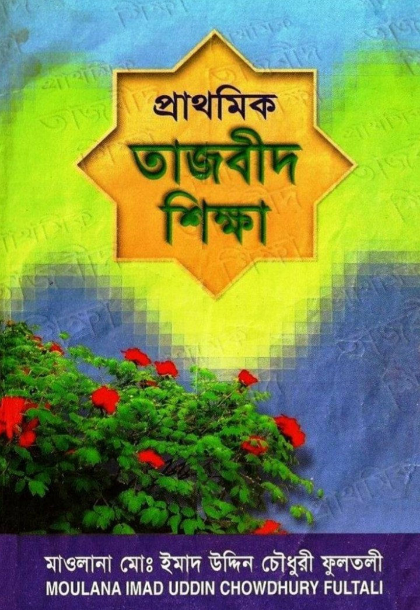
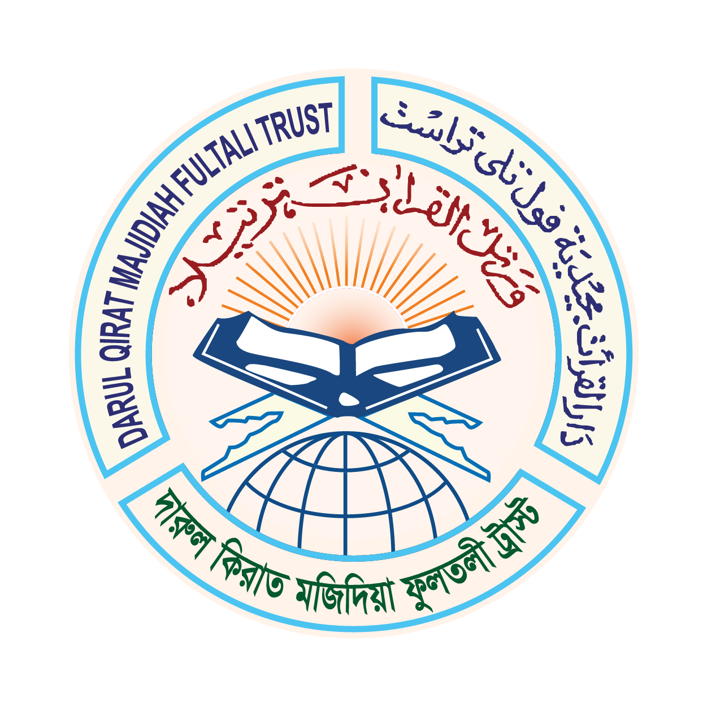

বই খুলুন ↗
ইসলামিক কিতাব

দারুন কিরাত মজিদিয়া ফুলতলী ট্রাস্ট
কুরআন ও তাজবীদ শিক্ষার বইসমূহ
📚 বইসমূহ
বইয়ের ছবিতে অথবা বই খুলুন বাটনে ক্লিক করুন
 বই খুলুন ↗
বই খুলুন ↗
📖
তৃতীয় বইনতুন বই পরে এখানে যুক্ত করা হবে
কুরআন ও তাজবীদ শিক্ষার বইসমূহ
বইয়ের ছবিতে অথবা বই খুলুন বাটনে ক্লিক করুন

বই খুলুন ↗
বই খুলুন ↗